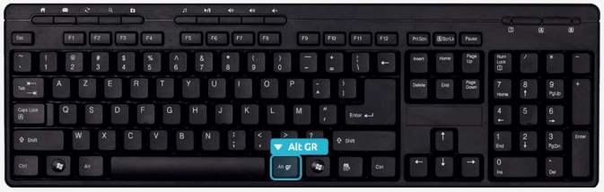
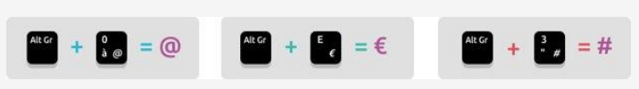

Avec la souris, le clavier est le deuxième moyen de communiquer avec son ordinateur. Il va vous permettre entre autres :
Il s’agit donc d’un outil indispensable que vous devez apprendre à maîtriser. Ne vous en faîtes pas, il n’y a rien de compliqué, vous y arriverez rapidement.
Le clavier français est un clavier azerty. Dans les pays anglophones, c’est le clavier qwerty qui est le plus représenté. Sur ces deux types de clavier, vous trouverez les mêmes touches, seules la disposition de celles-ci change. Les noms azerty et qwerty viennent des premières lettres de la zone de lettre.

À noter que le clavier numérique n’est pas présent sur tous les claviers. Certains ordinateurs portables par exemple, du fait de leur petite taille, n’ont pas la place pour cette zone. Les chiffres se retrouvent au-dessus des caractères spéciaux.
Pour le moment, en tant que débutant, vous allez taper simplement avec vos index. À l’avenir chaque doigt aura son rôle à jouer sur le clavier. Voici une image qui explique avec quel doigt taper quelle touche. C’est à force de manipulation et d’entrainement que vous apprendrez à taper comme une dactylo !
A la fois la plus grosse touche du clavier et aussi l’une des plus utilisées, elle vous permettra de faire un espace entre chacun de vos mots. Lorsque vos mains sont bien positionnées ce sont les pouces qui doivent appuyer sur cette touche.
La touche Entrée permet de retourner à la ligne et de créer un nouveau paragraphe lorsque vous êtes en saisie de texte, mais elle sert également à confirmer ou valider dans de multiples cas, lorsque Windows vous pose une question via une boîte de dialogue par exemple. Cela évite d’avoir à reprendre la souris pour cliquer.
La touche Échap est la toute première touche du clavier, en haut à gauche. Elle s’utilise en général lorsque le système vous pose une question et que vous souhaitez répondre par la négative (non, annuler…). Elle sert aussi à annuler une action en cours.
Il y a 2 manières de faire des majuscules sur un clavier. Repérez tout d’abord les touches que l’on va utiliser : Maj et Verr Maj (pour verrouillage majuscule). La touche Maj se trouve tout à gauche et tout à droite des lettres, et la touche Verr Maj juste en dessus la touche majuscule de gauche. Majuscules en début de phrase : lorsque vous commencez une phrase, vous devez mettre la première lettre en majuscule. Pour cela, maintenez enfoncée l’une des deux touches Maj (en jaune, et pas Verr Maj en vert) et appuyez sur la lettre désirée. Relâchez et continuez la saisie de votre texte.
Une phrase ou un nom propre en majuscule : la première technique est utile lorsque vous mettez qu’une seule lettre en majuscule, lorsque vous devez taper un nom propre ou plusieurs mots en majuscule, utilisez plutôt la touche Verr Maj : elle permet de verrouiller les majuscules, donc pas besoin de maintenir la touche, tout ce que vous taperez sera en majuscule. Appuyez à nouveau sur la touche Verr Num pour repasser en mode normal.
Vous vous êtes peut-être déjà demandé comment s’y prendre pour faire le signe € (Euro) ou même le @ (Arobase), qui constitue nos adresses e-mail. La solution réside dans la touche Alt Gr, qui se trouve juste à droite de la touche espace.
Pour faire une arobase ou le signe euro, entre autres, il faut maintenir la touche Alt Gr, et appuyer sur la touche E (de la zone des lettres) pour le € ou la touche à (de la zone des caractères spéciaux) pour le @.
Ces deux touches ont des fonctions similaires mais pas exactement les mêmes ! La touche Retour Arrière permet d’effacer du texte, elle se trouve juste au-dessus de la touche Entrée. La touche Suppr se trouve à droite de la touche entrée et permet de supprimer un élément (fichier, dossier…).
La touche Suppr permet aussi d’effacer du texte mais la différence réside dans le fait que la touche Retour Arrière efface vers la gauche (donc le texte tapé avant) et la touche Suppr efface le texte à droite du curseur (ce qui a été écrit après le curseur).
Ces deux accents sont tous deux situés sur la même touche du clavier mais pas directement associés à une lettre car ils peuvent être appliqués sur plusieurs d’entre elles (ï, ë, ê, û…) et il aurait donc été un peu compliqué de faire une touche pour chacune de ces lettres. La touche se trouve sur la droite juste après la lettre P
La technique :
pour faire un ê, il vous faudra d’abord appuyer sur la touche ^ (il ne se passe rien dans un premier temps) et ensuite sur la lettre e.
pour faire un ï, même technique sauf qu’il faut maintenir la Majuscule tout en appuyant sur ¨, relâcher et ensuite appuyer sur i.
Sur un clavier normal : Il existe une touche qui permet d’activer les chiffres. Elle s’appelle Verr Num (pour verrouillage numérique). Si cette touche est activée, une petite lumière sur le clavier est généralement allumée. Si vous essayez de taper des chiffres et que ça ne fonctionne pas, appuyez sur la touche Verr Num et réessayez. Vous pouvez utiliser le champ de formulaire ci-dessous pour vous exercer.
Sur un clavier d’ordinateur portable : Il se peut qu’il n’y ait pas de clavier numérique sur un ordinateur portable. Dans ce cas, il faudra taper sur les chiffres qui se trouvent au-dessus des caractères spéciaux avec l’aide de la touche Maj comme vu précédemment.
Il existe quelques règles de ponctuation à appliquer lorsque vous taperez du texte sur un ordinateur. Il existe notamment 2 types de ponctuation :
Ponctuation simple : les virgules (,) et les points (.)
Ponctuation double : les points-virgules (;) les deux points (:) les points d’exclamation (!) et les points d’interrogation (?)
Les caractères de ponctuations se situent en bas à droite du clavier, juste au dessus et à droite de la touche Espace et Alt Gr.
La règle consiste à coller la ponctuation simple (point et virgule) au texte qui la précède et de mettre un espace après.
Concernant la ponctuation double il faut mettre un espace avant et un espace après, puis recommencer une nouvelle phrase par une majuscule.
Pour faire un point il faut utiliser la touche Majuscule car il se trouve sur la même touche que le point-virgule, au-dessus de celui-ci.
Pour les 3 points « … » signifiant « et cætera », il suffit de taper 3 points à la suite.
Les guillemets «» et les parenthèses () sont situées en haut du clavier. Lorsque vous utilisez les guillemets, mettez un espace avant et après le sigle, « de cette manière ». En revanche, pour les parenthèses, laissez-les collées au texte à l’intérieur (comme ceci). Certains logiciels comme Word ajoutent automatiquement les espaces si nécessaire.
Située juste au-dessus de la touche Verrouillage Majuscule, la tabulation sert à 2 choses :
Lors d’une saisie de texte, la tabulation va créer un grand espace de plusieurs centimètres.
Elle permet aussi de passer à l’élément suivant. Par exemple quand vous remplissez un formulaire, si on vous demande votre nom dans un premier champ, puis votre prénom dans le champ suivant, une pression sur Tabulation vous fera basculer de l’un à l’autre au lieu de devoir reprendre la souris.
Ces touches se trouvent entre le clavier alphabétique et le clavier numérique, autour de la touche Suppr. Les touches début et fin permettent de se rendre rapidement au début ou à la fin d’un document ou d’une ligne, ce qui peut être utile lors de la saisie d’un texte. Les touches Page précédente (Page Up) et Page suivante (Page Down) permettent de faire défiler rapidement les pages d’un document que l’on consulte. Essayez sur cette page !
La touche Windows permet à tout moment d’ouvrir le menu démarrer. Cela revient donc à cliquer sur le bouton démarrer en bas à gauche de l’écran. La touche Windows se situe généralement à gauche et à droite de la touche Espace, après les touches Alt.
Ces deux touches ne servent pas à grand-chose seules. Elles vont par contre servir lorsqu’on les combine avec d’autres touches du clavier et vont permettre de copier, coller un élément, faire une recherche, sélectionner tout… On appelle ces actions des raccourcis clavier.
Un raccourci clavier représente une combinaison de touches à appuyer simultanément sur le clavier pour effectuer une action bien précise sur l'ordinateur. Les raccourcis clavier les plus couramment utilisés permettent d'enregistrer (ctrl+s) de copier (ctrl+c), coller (ctrl+v), fermer un logiciel ou une fenêtre(alt+f4)…
Le plus connu est CTRL+S, vous permettant d’enregistrer votre travail en cours (dans Word par exemple). Apprenez à le faire, et vous gagnerez énormément de temps !
Quelques raccourcis clavier à connaître :
CTRL + S (Save) : enregistrer
CTRL + P (Print) : imprimer
CTRL + C (Copy) : copier
CTRL + V : coller
CTRL + X : couper
CTRL + A (All) : Sélectionner tout (tous les icônes d’un dossier, tout le texte d’un document…)
CTRL + F (Find) : faire une recherche
CTRL + R (Reload) ou F5 : recharger une page web
ALT + F4 : Fermer un logiciel (équivalent à la croix en haut à gauche de la fenêtre)